Inisialisasi Cluster & Storage Menggabungkan server fisik menjadi satu pool resource terpusat dan datastore aSAN siap produksi.
Modul belajar interaktif dari 39 slide training resmi: memahami konsep dan syarat node clustering, deployment kabel dan IP, arsitektur distributed virtual storage (aSAN), 4 mode link aggregation, alokasi SSD cache dan HDD data, hingga inisialisasi datastore dan tes konektivitas gateway.
Target modul: setelah menyelesaikan modul ini, Anda mampu membangun cluster Sangfor HCI multi-node dari nol, menentukan Cluster IP, mengonfigurasi jaringan storage dan VXLAN overlay, serta menginisialisasi virtual datastore dengan pembagian disk yang memenuhi rekomendasi produksi.
Cluster controller
node-01 online
192.168.20.1 · Cluster IP
Datastore aSAN
10.2 TB tersedia
24 TB data / 2 × 85%
Catatan: seluruh diagram kabel, alur menu wizard, antarmuka console, dan rumus perhitungan disadur langsung dari materi resmi Sangfor HCI Training Indonesia Part 4.
Setelah modul ini, kamu bisa melakukan ini sendiri.
Bukan sekadar mengklik tombol di wizard. Lima kemampuan teknis ini yang digunakan secara langsung saat membangun infrastruktur cluster dan storage Sangfor HCI di lapangan.
Memahami konsep cluster: menggabungkan server fisik menjadi satu pool resource terpusat serta memverifikasi kesamaan versi firmware dan subnet IP.
Menjalankan deployment clustering: menghubungkan kabel jaringan fisik (management, edge, storage, overlay) dan menambahkan host baru lewat menu Add New Node.
Mengatur Cluster IP & VXLAN: menetapkan Cluster IP untuk stabilitas manajemen platform, membedakan Controller dan Cluster Controller, serta mengatur IP Address Pool overlay.
Memilih mode interface storage: menentukan mode Dedicated atau Shared, serta memilih konfigurasi link aggregation yang sesuai dengan switch yang digunakan.
Menginisialisasi Virtual Datastore: mengalokasikan SSD sebagai cache disk dan HDD sebagai data disk, mengonfigurasi disk group, menghitung kapasitas efektif, dan menguji konektivitas gateway.
Target praktis: minimal 2 node bergabung ke dalam satu cluster, berstatus Controller/Cluster Controller aktif, datastore aSAN terinisialisasi dengan pembagian cache/data yang benar, dan lulus uji tes konektivitas gateway.
Empat topik, satu alur inisialisasi.
Materi disusun berurutan sesuai alur kerja teknis: pahami konsep cluster, siapkan koneksi fisik dan IP, rancang arsitektur storage, lalu inisialisasi datastore virtual.
Konsep & Syarat Cluster
Definisi pool resource, manajemen terpusat, firmware sama, dan subnet IP.
Prasyarat wajibDeployment Clustering
Koneksi kabel, Add New Node, port SSH, Cluster IP, dan overlay VXLAN.
Menambah hostArsitektur Virtual Storage
Konsep aSAN, interface Dedicated vs Shared, 4 mode agregasi, dan jenis disk.
Cache & data diskInisialisasi Datastore
Wizard New Datastore, disk group, rumus kapasitas, dan tes konektivitas.
Siap pakai VMPanduan praktis: setiap topik dilengkapi screenshot antarmuka web console, penjelasan parameter input, serta catatan teknis lapangan. Bagian bertanda PERINGATAN TEKNIS menandai aturan operasional krusial yang dapat memicu downtime jika diabaikan.
Urutan inisialisasi dari server mandiri menjadi cluster aSAN.
Membangun cluster HCI berlangsung melalui lima tahapan terstruktur. Memahami urutan ini membantu administrator mengidentifikasi titik permasalahan dengan cepat.
Node fisik mandiri siap
Setiap node telah terinstal firmware dengan versi yang sama dan port SSH telah diaktifkan.
Penggabungan node ke cluster
Buka Nodes > Add New Node, tentukan Cluster IP, dan pilih node yang terdeteksi.
Konfigurasi jaringan overlay VXLAN
Tentukan rentang IP Address Pool untuk komunikasi privat jaringan virtual antar node.
Konfigurasi storage network interface
Pilih mode Dedicated atau Shared, tentukan link aggregation, dan atur IP address storage tiap node.
Pembuatan virtual datastore aSAN
Pilih disk, tetapkan SSD sebagai cache disk dan HDD sebagai data disk, lalu uji konektivitas gateway.
Peringatan teknis: jika konfigurasi storage network perlu diubah setelah cluster berjalan, seluruh VM yang aktif harus dimatikan terlebih dahulu. Pastikan perencanaan port dan IP storage sudah matang sejak tahap awal.
Apa Itu Node Clustering?
Konsep dasar penggabungan resource fisik menjadi satu pool terpusat, manfaat koordinasi otomatis, serta dua syarat utama yang wajib dipenuhi sebelum proses clustering dimulai.
Beberapa server fisik digabung menjadi satu kolam resource.
Node clustering pada Sangfor HCI menyatukan prosesor, memori, dan storage dari beberapa server fisik ke dalam satu pool terpusat. Pengelolaan tidak lagi dilakukan per server, melainkan melalui satu antarmuka terpadu.
Versi firmware berbeda
Node yang memiliki versi firmware atau patch berbeda tidak dapat digabungkan ke dalam cluster yang sama.
- Dampak: proses penambahan node gagal saat tahap verifikasi kompatibilitas.
Subnet IP terpisah
Management IP node dan Cluster IP yang berada di subnet berbeda menyulitkan komunikasi platform.
- Dampak: akses konsol terputus saat terjadi perpindahan peran controller.
Mengubah storage saat VM aktif
Mengubah konfigurasi port atau mode storage network saat mesin virtual sedang berjalan.
- Dampak: perubahan ditolak sistem hingga seluruh VM dimatikan terlebih dahulu.
Tiga pilar operasional node clustering: (1) Satu kolam resource: kapasitas CPU, RAM, dan disk seluruh node tampil sebagai satu kesatuan. (2) Manajemen terpusat: koordinasi dan penjadwalan resource diatur otomatis dari satu console. (3) Digunakan bersama oleh VM: setiap mesin virtual dapat mengambil komputasi dan ruang penyimpanan dari pool bersama tanpa terikat pada satu server fisik tertentu.
Dua syarat utama sebelum menggabungkan node.
Sebelum membuka wizard penambahan node, dua persyaratan teknis berikut wajib dipenuhi secara ketat agar cluster beroperasi stabil.
| Kriteria | Ketentuan teknis | Alasan & penjelasan operasional |
|---|---|---|
| Versi firmware & patch | Wajib sama persis pada seluruh node fisik | Mencegah ketidakcocokan protokol clustering dan inkonsistensi modul kernel antar host. Contoh: dua node HCI 6.8.0 harus menggunakan nomor build yang sama. |
| Rekomendasi IP subnet | Management IP dan Cluster IP berada dalam satu subnet | Memastikan konsol administrasi tetap dapat diakses tanpa hambatan routing. Contoh: node-1 (192.168.0.2), node-2 (192.168.0.3), dan Cluster IP (192.168.0.1). |
| Cluster IP address | Satu alamat IP virtual bersama | Digunakan untuk mengelola seluruh cluster secara terpusat, bahkan ketika salah satu node controller mengalami gangguan fisik. |
| Layanan SSH (Port 22) | Wajib diaktifkan sementara saat join | Sistem Sangfor HCI menonaktifkan port SSH secara default untuk keamanan; port ini harus dibuka agar wizard Add New Node dapat mendeteksi host. |
Prinsip Cluster IP: Cluster IP bukan milik satu port jaringan fisik tetap, melainkan alamat virtual yang dipegang oleh node bertindak sebagai Cluster Controller. Jika node pemegang Cluster IP mati, hak kendali berpindah otomatis ke node Controller lain tanpa memutus sesi administrasi browser.
Perhitungan kapasitas pool resource bersama.
Slide training memberi contoh: 4 node dengan masing-masing 2 CPU dan 128 GB RAM menghasilkan satu pool terpadu sebesar 8 CPU dan 512 GB RAM. Gunakan simulator berikut untuk menghitung total kapasitas cluster Anda.
Kalkulator Resource Pool Cluster
Total pool mentah: 64 Core CPU dan 512 GB RAM dari 4 node fisik terhubung.
Konfigurasi seimbang: kapasitas cluster mampu menampung failover otomatis jika salah satu server fisik mengalami pemadaman mendadak.
Empat interface jaringan dalam arsitektur cluster.
Berdasarkan diagram koneksi dua node Sangfor HCI, setiap node menghubungkan antarmuka management, edge, storage, dan overlay sesuai perannya masing-masing.
Pemisahan switch fisik: pada diagram arsitektur resmi Sangfor, Management Interface Switch dipisahkan dari Edge Interface Switch. Pemisahan ini memastikan bahwa lonjakan lalu lintas internet dari mesin virtual tidak mengganggu kestabilan kontrol manajemen konsol cluster.
Karakteristik kontrol disk pada arsitektur aSAN.
Virtual storage Sangfor (aSAN) bekerja pada lapisan software dengan distributed file system. Disk fisik harus dapat diakses langsung oleh sistem operasi tanpa enkapsulasi hardware RAID.
Hardware RAID 5 / 6
Mode 1 · enkapsulasi controller- Controller RAID menyembunyikan identitas fisik disk dari aSAN
- Penalti penulisan ganda (write penalty) membebani IOPS
- aSAN tidak dapat mendeteksi kegagalan disk individual secara presisi
- Replikasi aSAN menjadi tidak efisien di atas RAID fisik
Single RAID 0 per Disk
Mode 2 · satu volume per disk fisik- Setiap disk fisik didaftarkan sebagai volume virtual RAID 0 terpisah
- Solusi jika controller server tidak mendukung mode JBOD murni
- Membutuhkan konfigurasi manual satu per satu di utility RAID
- Proteksi redundansi tetap diserahkan sepenuhnya ke aSAN
JBOD / Passthrough (HBA)
Mode 3 · controller transparan- Controller meneruskan seluruh disk apa adanya ke sistem operasi
- aSAN membaca serial number, tipe SSD/HDD, dan status SMART secara utuh
- Distribusi replika 2-copy dan striping berjalan optimal
- Jalur komunikasi I/O paling efisien dengan latensi terendah
Mengaktifkan port SSH di System > Port Management.
Berdasarkan Slide 10, jika node baru tidak terdeteksi pada wizard penambahan node, penyebab utamanya adalah port SSH dalam keadaan dinonaktifkan secara default oleh sistem.
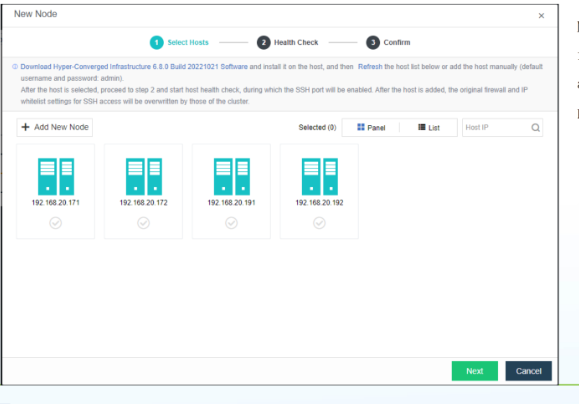
- Buka menu System
Masuk ke System > Port Management pada web console node yang ingin ditambahkan.
- Cari layanan SSH
Temukan entri port 22 (SSH Management Service) pada daftar port sistem.
- Aktifkan status port
Ubah status port SSH dari Disabled menjadi Enabled.
- Buka wizard Add New Node
Kembali ke node utama, buka Nodes > Add New Node.
- Scan node otomatis
Node target akan langsung terdeteksi pada daftar host jaringan yang tersedia.
Catatan keamanan Sangfor: setelah proses join cluster selesai, kebijakan firewall dan whitelist IP cluster secara otomatis mengambil alih pengaturan akses SSH node tersebut.
Panduan Deployment Clustering
Langkah teknis membangun cluster: menghubungkan kabel fisik, menambahkan node melalui wizard, menetapkan Cluster IP, mengubah management IP secara masal, dan mengatur VXLAN overlay.
Koneksi interface node: sesuaikan kabel dengan rencana jaringan.
Slide 7 menggambarkan koneksi fisik dua node Sangfor HCI. Setiap fungsi jaringan dihubungkan ke port dan switch yang tepat sebelum host digabungkan ke cluster.
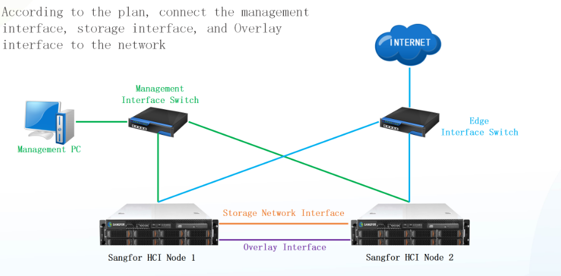
- Hubungkan Management Interface
Koneksikan port eth0 seluruh node ke Management Switch untuk akses web console dan komunikasi cluster.
- Hubungkan Edge Interface
Koneksikan port physical edge ke Edge Switch sebagai jalur keluar traffic VM menuju internet atau router kantor.
- Hubungkan Storage Interface
Koneksikan port storage antar node — bisa langsung kabel direct (pada 2 node) atau melalui storage switch.
- Hubungkan Overlay Interface
Koneksikan port overlay VXLAN antar node untuk komunikasi virtual private network antar mesin virtual.
Catatan koneksi 2 node: pada cluster 2 node, interface storage dan overlay dapat dihubungkan langsung menggunakan kabel Ethernet antar host tanpa memerlukan switch storage fisik tambahan.
Empat interface yang harus dipersiapkan pada setiap node.
Pemisahan fungsi interface adalah kunci kestabilan cluster. Setiap peran memiliki karakteristik throughput dan kebutuhan isolasi yang berbeda.
Management Interface
eth0 · port Gigabit / 10G- Mengakses web console HCI via browser HTTPS.
- Menampung Cluster IP virtual untuk manajemen bersama.
- Sinkronisasi status heartbeat dan koordinasi antar node.
Storage Interface
10 GbE / 25 GbE · Dedicated- Menyalurkan data sinkronisasi replika storage aSAN.
- Membutuhkan latency terendah dan throughput stabil.
- Mendukung dedicated mode atau shared mode (NIC khusus).
Overlay Interface
VXLAN · IP Address Pool- Membangun tunnel virtual network antar server fisik.
- Paket data VM melintas tanpa keluar ke switch fisik.
- Bisa dikonfigurasi sebagai link aggregation redundan.
Edge Interface
Uplink Switch · VLAN Trunk- Menghubungkan virtual router ke jaringan fisik luar.
- Jalur akses pengguna akhir menuju aplikasi di dalam VM.
- Dihubungkan ke switch edge atau firewall perusahaan.
Penting: jangan mencampur kabel management dan storage pada switch unmanaged 1 Gbps yang sama tanpa segmentasi VLAN. Beban sinkronisasi aSAN saat rebuild dapat menghabiskan antrean buffer switch dan menyebabkan konsol manajemen timeout.
Langkah menambah node dan mengatur Cluster IP.
Menambah node ke cluster dilakukan melalui menu Nodes > Add New Node. Ikuti alur layar di bawah dari inisiasi wizard hingga node berhasil beroperasi sebagai Controller.
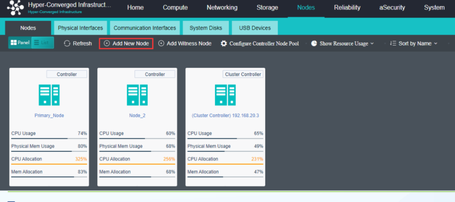
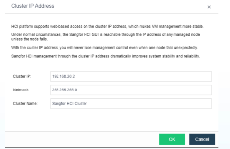
Buka menu Nodes dan tentukan Cluster IP
Proses clustering dimulai dari node pertama yang sudah aktif. Saat tombol Add New Node ditekan pertama kali pada node tunggal, sistem akan meminta pengaturan Cluster IP sebelum mendeteksi node lain.
- Buka menu Nodes. Masuk ke menu Nodes pada bilah navigasi utama. Host yang sudah ada akan tampil dengan kartu metrik CPU, penggunaan memori, dan status resource.
- Klik Add New Node. Klik tombol
+ Add New Node. Kotak dialog Cluster IP Address akan muncul. - Tentukan Cluster IP & Netmask. Masukkan alamat IP virtual (misal
192.168.20.2atau192.168.20.1), netmask (255.255.255.0), dan beri nama cluster (misal Sangfor HCI Cluster). - Disarankan satu subnet. Pastikan Cluster IP berada dalam satu segmen subnet dengan Management IP seluruh node agar konsol selalu bisa diakses.
Fungsi utama Cluster IP: platform Sangfor HCI mendukung akses web berbasis Cluster IP untuk membuat manajemen VM lebih stabil. Administrator tidak perlu mengingat IP masing-masing node fisik secara terpisah.
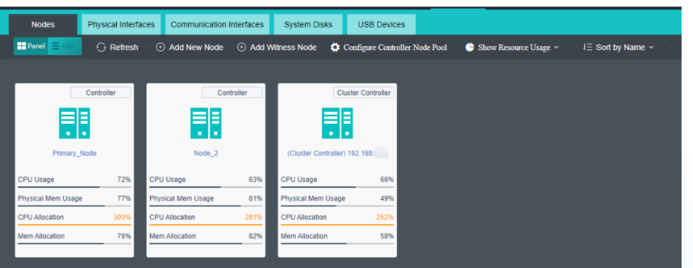
Pilih node dan verifikasi status Controller
Setelah Cluster IP ditetapkan, wizard melangkah ke pemindaian jaringan lokal. Seluruh server fisik dengan firmware Sangfor HCI yang aktif akan ditampilkan.
- Centang host target. Pilih node yang ingin ditambahkan ke cluster (contoh:
192.168.20.171,192.168.20.172,192.168.20.191,192.168.20.192). - Pemeriksaan port SSH. Jika node tidak muncul dalam daftar, pastikan port SSH (port 22) telah diaktifkan di node tersebut via System > Port Management.
- Health Check & Confirm. Wizard akan menjalankan pemeriksaan kesehatan node otomatis sebelum mengintegrasikan konfigurasi.
- Status Controller aktif. Setelah selesai, setiap node tampil dengan label status: Controller atau Cluster Controller. Node Cluster Controller adalah server yang saat ini aktif memegang Cluster IP.
Pemeriksaan pasca-join: segera periksa status CPU Allocation, Physical Memory Usage, dan Memory Allocation pada kartu tiap node di dashboard untuk memastikan seluruh resource terbaca seimbang.
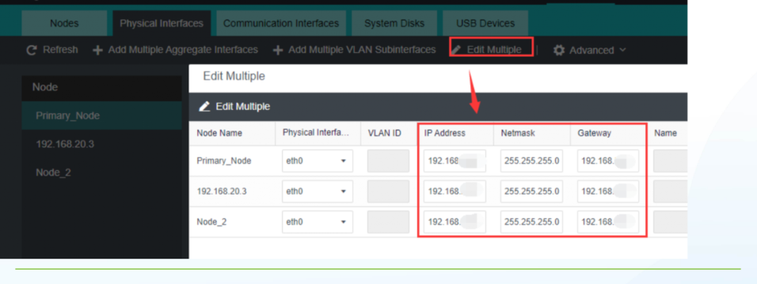
Mengubah Management IP node secara masal
Jika alamat IP management node perlu disesuaikan dengan denah IP produksi baru, gunakan fitur Edit Multiple agar tidak perlu mengedit satu per satu.
- Buka Physical Interfaces. Masuk ke menu Nodes > Physical Interfaces.
- Klik Edit Multiple. Klik tombol
Edit Multiplepada bilah menu interface. - Edit alamat IP serentak. Ubah kolom IP Address, Netmask, dan Gateway untuk setiap node (misal
Primary_Node,Node_2, dan host ketiga). - Simpan perubahan. Pastikan seluruh alamat IP baru berada dalam satu subnet yang sama sebelum menekan tombol Save/OK.
Perhatian subnet: saat mengubah IP via Edit Multiple, jangan biarkan ada node yang terpisah ke subnet lain tanpa gateway yang routable. Hal ini dapat menyebabkan host tersebut terisolasi dari koordinasi cluster.
Mengatur VXLAN IP node di Overlay Network Interface.
Slide 13 menjelaskan konfigurasi VXLAN interface untuk komunikasi virtual mesin virtual antar node, termasuk alokasi rentang IP Address Pool otomatis.
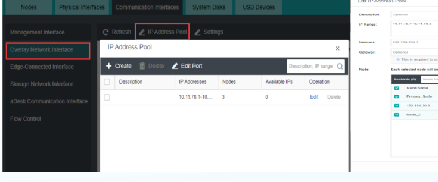
- Buka Communication Interfaces
Masuk ke Nodes > Communication Interfaces > Overlay Network Interface.
- Buka Settings > IP Address Pool
Klik tombol
SettingsatauIP Address Pooluntuk menentukan pool alamat IP overlay. - Tentukan rentang IP Pool
Contoh: masukkan rentang
10.11.78.1–10.11.78.3dengan netmask255.255.255.0. - Tetapkan node penerima
Centang node fisik yang akan menggunakan pool tersebut (contoh: Primary_Node, 192.168.20.3, Node_2).
- Opsi koneksi 2 node
Jika cluster hanya terdiri dari 2 node, interface VXLAN dapat dihubungkan langsung dengan kabel Ethernet tunggal.
Link Aggregation pada VXLAN: interface VXLAN overlay juga dapat dikonfigurasi menggunakan link aggregation multi-port untuk meningkatkan redundansi dan throughput komunikasi antar VM.
Pengenalan Virtual Storage (aSAN)
Arsitektur distributed storage, pilihan mode storage Dedicated vs Shared, 4 metode deployment link aggregation, replika 2-copy, serta karakteristik disk data, cache, dan spare.
Virtual Storage: menggabungkan seluruh hard disk menjadi satu storage virtual.
Slide 14–15 memperkenalkan aSAN: teknologi distributed storage yang menggabungkan disk lokal dari minimal 2 node fisik menjadi satu kolam penyimpanan bersama. Strukturnya mirip RAID 10 dengan multi-copy dan striping di lapisan software.
aSAN File System
Minimal 2 node fisik, distributed storage mirip RAID 10.
Lisensi aSANInterface Mode
Dedicated Mode (direkomendasikan) atau Shared Mode.
10 GbE / 25 GbELink Aggregation
4 pilihan deployment sesuai ketersediaan port & switch.
Redundansi linkSalinan 2-Copy
Data disalin ke node berbeda; aman jika 1 node gagal.
Toleransi hostCache SSD
Wajib SSD ≥ 256 GB; rasio 1:3 jumlah disk dan 1:10 volume.
Akselerasi I/OData & Spare Disk
HDD enterprise >7200 RPM untuk kapasitas, spare otomatis.
Failover diskKonsep distributed file system: setiap mesin virtual mengambil ruang penyimpanan dari virtual datastore bersama. aSAN secara transparan mendistribusikan blok data dan salinan replikanya ke node fisik lain, sehingga kerusakan satu server fisik tidak menyebabkan VM kehilangan data.
Interface, agregasi, salinan data, dan jenis disk.
Pilih tab di bawah untuk melihat rincian setiap pilar arsitektur virtual storage Sangfor HCI, disertai tangkapan layar console resmi dan panduan implementasinya.
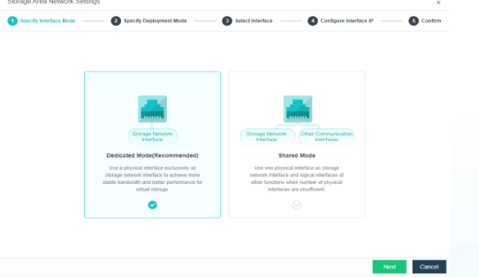
Storage Interface: Dedicated Mode
Interface fisik berdiri sendiri secara eksklusif dan hanya digunakan untuk lalu lintas jaringan storage aSAN.
- Performa dan bandwidth terjamin. Lalu lintas sinkronisasi disk tidak terganggu oleh lonjakan trafik jaringan lain.
- Stabilitas tinggi. Isolasi fisik mencegah persaingan paket antara data storage dengan jaringan bisnis atau manajemen.
- Pengaturan agregasi mandiri. Jika mode ini dipilih, opsi deployment mode untuk link aggregation dapat diatur secara fleksibel.
Standar industri: untuk seluruh lingkungan produksi kritis, Sangfor merekomendasikan penggunaan Dedicated Mode dengan kabel minimal 10 GbE.
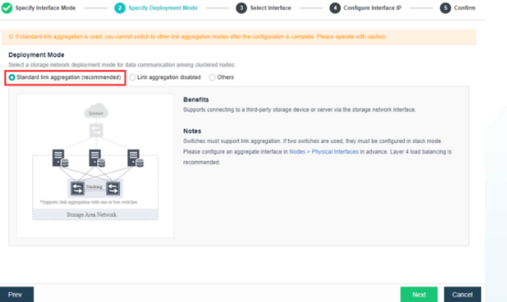
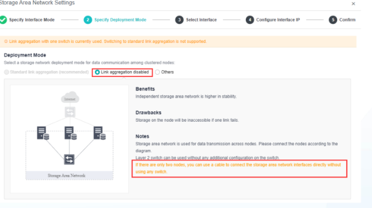
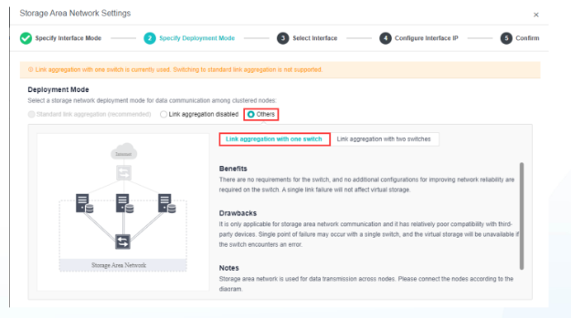
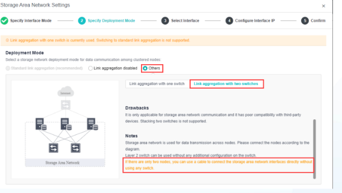
Perbandingan 4 Mode Link Aggregation Storage
Pemilihan mode agregasi storage network bergantung pada jumlah port jaringan per server dan konfigurasi switch fisik yang tersedia di rak.
- Standard Link Aggregation (Slide 18): mendukung koneksi ke switch pihak ketiga yang sudah dikonfigurasi LACP / agregasi port (Layer 4 load balancing direkomendasikan). Wajib jika memakai Shared Mode.
- Link Aggregation Disabled (Slide 19): paling sederhana, dipakai jika hanya tersedia 1 interface storage per host. Pada cluster 2 node, mode ini dapat menghubungkan langsung port storage kedua node tanpa switch. Kekurangan: tidak ada redundansi fisik jika kabel putus.
- Link Aggregation with One Switch (Slide 20): menghubungkan 2 interface storage ke satu switch tanpa perlu konfigurasi port channel khusus di sisi switch. Redundan terhadap putusnya satu kabel.
- Link Aggregation with Two Switches (Slide 21): menghubungkan interface storage ke dua switch terpisah (stacking switch). Tahan terhadap kegagalan salah satu switch maupun kabel. Disarankan untuk koneksi redundan 2 node.
Jumlah Copy Data: 2 Copy di 2 Node vs 2 Copy di 3 Node
Setiap blok data disimpan dalam beberapa salinan (replika) di node yang berbeda agar data tetap aman dan VM tetap beroperasi saat ada node fisik yang rusak.
2 Copy di 2 Node
- Setiap data disimpan 2 kali: 1 salinan di Node 1 dan 1 salinan di Node 2
- Jika salah satu node fisik gagal, data masih tersedia lengkap di node lainnya
- Contoh: Data A, B, dan C di Node 1 disalin secara paralel ke Node 2
- Kapasitas usable efektif adalah 50% dikurangi cadangan utilisasi
2 Copy di 3 Node
- Setiap data disimpan 2 kali, tetapi salinannya disebar bergantian di antara 3 node
- Beban baca-tulis (I/O) terbagi lebih merata ke seluruh controller disk
- Rebuild data lebih cepat karena sumber data dibaca dari dua node sekaligus
- Proteksi lebih seimbang saat pemeliharaan salah satu server
Catatan kebijakan: jumlah salinan data dapat disesuaikan dengan tingkat kebutuhan proteksi dan kapasitas penyimpanan yang tersedia pada cluster.
Jenis Disk: Data Disk (HDD, SSD, SAS, NVMe)
Data disk berfungsi menyimpan citra virtual machine dan seluruh data aplikasi. Pilihan jenis media memengaruhi kapasitas, biaya, dan performa IOPS cluster.
| Aspek Evaluasi | HDD (Hard Disk Drive) | SSD (SATA / SAS) | NVMe PCIe |
|---|---|---|---|
| Kapasitas | Sangat Besar | Sedang | Kecil |
| Biaya per GB | Rendah | Tinggi | Sangat Tinggi |
| Kecepatan & IOPS | Sedang | Cepat | Sangat Cepat |
| Peran dalam aSAN | Direkomendasikan untuk Data Disk | Data Disk atau Cache Disk | Data Disk atau Cache Berkecepatan Tinggi |
- Rekomendasi HDD: wajib menggunakan hard disk kelas enterprise dengan kecepatan putaran di atas 7200 RPM.
- Pencampuran SAS dan SATA: disk SAS boleh digabungkan dengan SATA di dalam node yang sama, namun kecepatan throughput keseluruhan akan mengikuti batas terendah (kecepatan SATA).
- Pembentukan Storage Pool: seluruh data disk dari setiap host cluster digabungkan membentuk satu virtual storage tunggal.
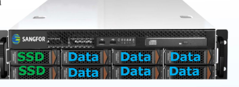
Jenis Disk: Cache Disk & Spare Disk
Cache disk bertugas menyerap operasi baca-tulis berkecepatan tinggi, sementara spare disk siap menggantikan data disk yang mengalami kerusakan.
- Cache disk wajib SSD: mempercepat proses baca dan tulis data VM. Disarankan SSD berukuran minimal 256 GB atau lebih besar.
- Rasio jumlah disk: perbandingan jumlah cache disk dan data disk yang disarankan adalah 1:3 (1 SSD untuk setiap 3 HDD).
- Rasio volume kapasitas: perbandingan total volume cache terhadap data disarankan 1:10, dan tidak boleh lebih kecil dari 1:20.
- Kapasitas data besar: jika setiap data disk berukuran lebih dari 2 TB, gunakan SSD cache berukuran minimal 512 GB.
- Cara kerja Spare Disk (Slide 26): spare disk berada dalam posisi siap pakai (standby) di cluster. Jika salah satu data disk rusak, sistem otomatis memindahkan data dari salinan replika yang tersisa ke spare disk. Fitur ini harus diaktifkan saat konfigurasi.
Cara Inisialisasi Virtual Storage
Langkah demi langkah: konfigurasi storage network, wizard pembuatan datastore, pemilihan disk group cache/data, perhitungan kapasitas efektif, dan tes konektivitas gateway.
Alur konfigurasi storage network hingga pembuatan datastore.
Inisialisasi virtual storage (aSAN) dilakukan melalui web console Sangfor HCI. Ikuti alur penyiapan network interface, pemilihan disk host, alokasi disk group, hingga konfirmasi kata sandi administrator.
Konfigurasi Storage Network Interface
Buka menu Nodes > Communication Interfaces > Storage Network Interface, lalu klik Edit Storage Area Network. Pilih kartu jaringan fisik (NIC) yang didedikasikan untuk lalu lintas aSAN.
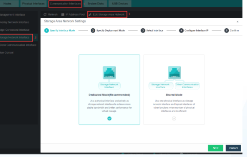
Aturan kritis: Jika port jaringan storage atau konfigurasinya perlu diubah di kemudian hari, seluruh Virtual Machine (VM) yang berjalan harus dimatikan terlebih dahulu (power off).
Alokasi IP Address Storage Network per Host
Tentukan interface fisik dan masukkan alamat IP statis untuk storage network pada setiap host cluster. Seluruh node harus berada dalam satu segmen IP storage yang sama dan saling terhubung tanpa routing eksternal.
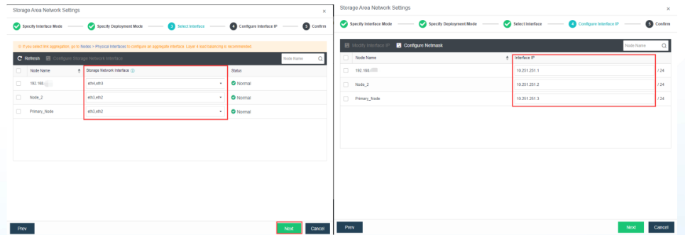
Buat Virtual Datastore Baru
Buka menu Storage > Virtual Storage, klik menu pull-down New, lalu pilih Create Virtual Datastore. Masukkan nama datastore (contoh: HCI_Datastore) dan pilih tipe datastore:
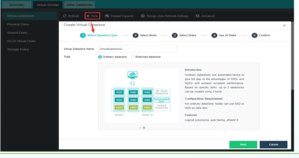
- Ordinary Virtual Datastore: datastore standar untuk satu lokasi rak atau data center fisik.
- Stretched Virtual Datastore: datastore terdistribusi melintasi dua lokasi terpisah (active-active dual-DC). Memerlukan minimal 4 node.
Pilih Metode Penambahan Disk
Tentukan sumber disk fisik yang akan digunakan untuk membentuk datastore baru. Sistem menyediakan dua metode:
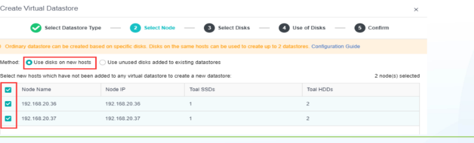
| Opsi Metode | Kondisi Penggunaan | Ketentuan Minimum Node |
|---|---|---|
| Use disks on new hosts | Menggunakan seluruh disk fisik yang belum teralokasi dari node baru. | Minimal 2 node. |
| Use unused disks added to existing datastores | Membuat datastore kedua menggunakan sisa disk yang belum dipakai dari datastore lama. | Minimal 3 node untuk datastore kedua. |
Pilih Host dan Disk Penyimpanan
Centang host yang berpartisipasi dan pilih disk fisik yang akan disertakan. Sistem mendeteksi tipe media (SSD / HDD), nomor slot, dan kapasitas masing-masing disk secara otomatis.
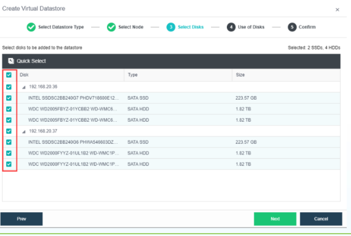
Atur Peran Disk (Cache & Data) serta Disk Group
Tentukan peruntukan setiap disk: SSD dialokasikan sebagai Cache Disk, sedangkan HDD atau SSD kapasitas besar dialokasikan sebagai Data Disk atau Spare Disk.
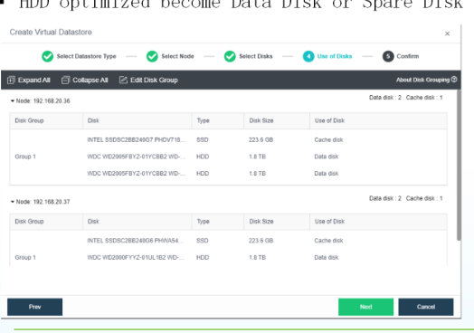
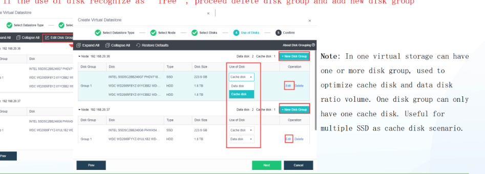
Ketentuan Disk Group (Slide 34): Dalam satu virtual storage dapat dibuat beberapa Disk Group. Namun, setiap Disk Group hanya boleh memiliki tepat 1 Cache Disk. Jika status disk muncul sebagai free, hapus disk group tersebut lalu buat kembali.
Peringatan SSD Pihak Ketiga (Slide 33): Jika menggunakan SSD non-Sangfor (third-party), wajib mengonfirmasikan tipe dan model ke Sangfor TAC sebelum implementasi untuk memastikan kompatibilitas kontroler dan performa penulisan cache.
Verifikasi Ringkasan & Konfirmasi Kata Sandi Admin
Tinjau ringkasan konfigurasi: kapasitas total mentah (raw), rasio cache terhadap data, kapasitas efektif (usable), dan replikasi 2-copy. Masukkan kata sandi administrator cluster untuk mengeksekusi inisialisasi.
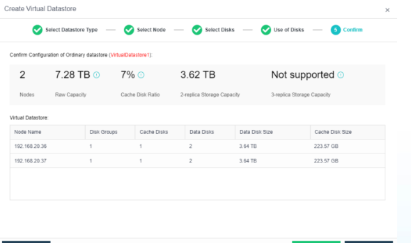
Checklist Verifikasi Inisialisasi aSAN
Centang sepuluh item prasyarat dan verifikasi sebelum menyalakan VM produksi. Progres disimpan di browser ini.
Catatan lapangan: Pastikan status seluruh disk fisik dalam kondisi normal dan tidak ada indikasi bad sector sebelum inisialisasi dijalankan. Kerusakan disk saat pembuatan datastore dapat membatalkan proses pembentukan pool.
Rumus perhitungan kapasitas storage tersedia (Usable Storage).
Slide 36 menyajikan rumus standar Sangfor untuk menghitung kapasitas penyimpanan efektif yang siap digunakan virtual machine setelah replikasi dan alokasi sistem.
Rumus Resmi Kapasitas Tersedia (Slide 36):
Kapasitas Tersedia = (Total Kapasitas Data Disk / 2) × 85%
Contoh: Total data disk seluruh node = 24 TB. Maka kapasitas yang dapat dialokasikan ke VM = (24 TB / 2) × 85% = 10.2 TB.
Kalkulator Kapasitas Virtual Storage aSAN
Geser parameter untuk menghitung estimasi kapasitas mentah (raw), usable storage, dan kebutuhan cache SSD.
Uji konektivitas gateway dan dashboard status aSAN.
Setelah virtual storage selesai dibuat, uji konektivitas gateway wajib dijalankan untuk mencegah insiden node terisolasi. Pantau kesehatan storage melalui dashboard terintegrasi.
Uji Konektivitas Gateway Storage
Kotak dialog Test Connectivity meminta administrator memasukkan alamat IP gateway jaringan storage. Node akan mengirimkan ping berkala ke gateway ini untuk mendeteksi apakah node kehilangan koneksi ke jaringan storage.
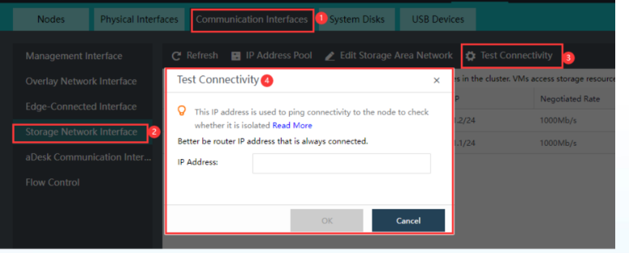
Syarat target IP: Gunakan IP perangkat jaringan (switch L3 atau router) yang selalu aktif (always-on). Jangan menggunakan IP laptop atau perangkat temporer.
Dashboard Pemantauan Virtual Storage
Halaman utama Virtual Storage menampilkan informasi komprehensif terkait kondisi datastore: total raw capacity, used capacity, available space, status kesehatan disk, serta grafik IOPS dan latensi secara real-time.
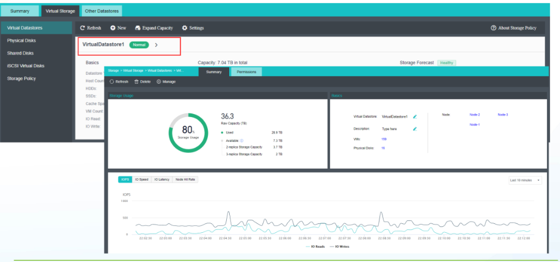
- Health Status: indikator warna hijau menandakan seluruh disk dan replika data dalam keadaan normal.
- Throughput & Latensi: pantau latensi baca-tulis saat beban tinggi untuk memastikan performa cache SSD optimal.
Gejala masalah, penyebab umum, dan solusi di lapangan.
Masalah saat deployment cluster dan inisialisasi aSAN umumnya berpusat pada jaringan komunikasi, kompatibilitas disk, dan alokasi disk group. Gunakan panduan berikut untuk investigasi cepat.
| Gejala Masalah | Kemungkinan Penyebab | Titik Pemeriksaan | Tindakan Perbaikan |
|---|---|---|---|
| Node tidak muncul di wizard Add Node | Port SSH dinonaktifkan pada node baru | Menu System > Port Management di node tujuan | Aktifkan port SSH (port 22) lalu ulangi pencarian node |
| Gagal join cluster (Timeout / Error) | Versi build firmware atau subnet IP berbeda | Versi OS pada console dan konfigurasi netmask | Samakan versi firmware ke rilis yang sama dan pastikan satu segmen IP |
| Storage Network Communication Failed | VLAN salah atau port switch belum dikonfigurasi MTU 9000 | Konfigurasi port switch dan setelan interface | Verifikasi VLAN storage di switch; samakan MTU pada port server dan switch |
| SSD Cache ditolak / Status Incompatible | SSD consumer atau model tidak didukung kontroler | HCL Sangfor dan tipe flash disk (MLC/TLC enterprise) | Gunakan SSD enterprise dan mintakan validasi dari Sangfor TAC |
| Disk berstatus "Free" di luar disk group | Disk ditambahkan setelah group terbentuk atau konfigurasi korup | Menu Edit Disk Group pada host terkait | Hapus disk group yang bermasalah, lalu buat ulang disk group dengan 1 SSD cache |
| Inisialisasi datastore gagal di akhir wizard | Kata sandi admin salah atau terdapat disk yang memiliki partisi lama | Otentikasi admin dan status disk clean (raw/unformatted) | Verifikasi password admin cluster; pastikan disk dibersihkan sebelum ditambahkan |
| Stretched Datastore tidak dapat dipilih | Jumlah node cluster kurang dari batas minimal | Jumlah node fisik yang aktif di cluster | Stretched Datastore mewajibkan minimal 4 node (2 node per site) |
| Muncul alarm "Node Isolated" | Kabel storage putus atau target IP gateway tidak merespons ping | Tes ping ke gateway storage dan lampu link NIC | Pastikan IP gateway storage always-on dan kabel fiber/DAC terhubung kencang |
Urutan diagnosis storage: Fisik kabel & link SFP+ → Port switch & VLAN → Ping antarnode → Setting Disk Group. Jangan memformat ulang datastore sebelum memeriksa lapisan jaringan fisik.
Lima kesalahan yang paling berisiko.
Kesalahan konfigurasi pada lapisan cluster dan storage sering baru berdampak fatal saat sistem sudah menjalankan beban kerja produksi. Kenali jebakan berikut agar tidak terjadi di lingkungan Anda.
Ubah Storage Network Saat VM Hidup
Mengubah interface jaringan storage atau IP saat VM aktif akan memutus jalur baca-tulis aSAN seketika. Seluruh VM wajib dimatikan (power off) sebelum mengubah setelan storage network.
Memakai SSD Consumer Tanpa TAC
SSD consumer tidak memiliki ketahanan tulis (TBW) dan power loss protection yang memadai untuk cache aSAN. Selalu gunakan SSD kelas enterprise yang telah disetujui Sangfor TAC.
Lebih dari 1 Cache Disk per Disk Group
Sistem aSAN mensyaratkan tepat 1 cache disk untuk setiap disk group. Memaksakan beberapa cache disk dalam satu group tidak didukung dan dapat menyebabkan status disk menjadi free atau gagal alokasi.
Menghitung Usable Storage Tanpa Faktor 85%
Mengabaikan cadangan 15% untuk sistem, snapshot, dan metadata akan menyebabkan kapasitas habis mendadak dan VM terhenti (freeze). Selalu gunakan rumus: (Total Data Disk / 2) × 85%.
IP Gateway Uji Menggunakan Laptop
Memasukkan IP laptop teknisi pada dialog Test Connectivity akan memicu alarm isolasi palsu saat laptop dicabut dari jaringan. Selalu targetkan IP router atau switch core yang aktif permanen.
Peringatan integritas data: Lapisan aSAN mengelola seluruh blok data virtual machine. Kedisiplinan mengikuti arsitektur referensi menjamin stabilitas cluster jangka panjang.
Enam rangkuman utama dari Slide 39.
Slide 39 menyajikan kesimpulan fundamental terkait pembentukan cluster dan inisialisasi aSAN. Pegang prinsip-prinsip ini sebelum melakukan deployment di server nyata.
Minimum 2 node untuk cluster dan aSAN biasa. Konfigurasi dasar memerlukan setidaknya dua server fisik. Jika membutuhkan Stretched Datastore (dua lokasi data center), minimal 4 node wajib disediakan.
Firmware identik dan satu segmen IP management. Seluruh node harus mengoperasikan versi firmware HCI yang sama persis dan berada dalam satu subnet IP manajemen agar proses penemuan dan koordinasi node berjalan tanpa hambatan.
Pilih mode interface storage sesuai kartu jaringan. Mode Dedicated mensyaratkan NIC fisik terpisah, sementara Shared Mode hanya mendukung kartu 10G Mellanox CX4 dan Intel X710. Tentukan strategi link aggregation berdasarkan ketersediaan switch.
Aturan ketat alokasi disk group: 1 SSD cache per group. Cache SSD wajib bertipe enterprise minimal 256 GB. Jaga rasio jumlah 1:3 dan rasio kapasitas 1:10 (maksimal 1:20). Selalu konsultasikan SSD pihak ketiga dengan Sangfor TAC.
Rumus kapasitas efektif: (Total Data Disk / 2) × 85%. Jangan menghitung usable storage secara mentah. Sisihkan 15% ruang wajib untuk metadata sistem dan snapshot operasional VM.
Matikan seluruh VM sebelum mengubah jaringan storage dan uji gateway. Perubahan interface storage saat VM menyala berisiko korupsi I/O. Konfigurasikan IP gateway router yang always-on untuk mendeteksi isolasi node secara akurat.
Kaidah operasional Sangfor: Stabilitas cluster HCI sangat bergantung pada kebersihan konfigurasi jaringan fisik dan kepatuhan arsitektur disk group. Setiap langkah verifikasi di awal mencegah downtime tak terduga di masa produksi.
Parameter teknis penting untuk deployment lapangan.
Gunakan tabel ringkasan ini sebagai referensi cepat saat melakukan instalasi dan konfigurasi di rak data center.
Alur Singkat Deployment Cluster & Storage
Kabel terhubung · Port SSH aktif
Tentukan IP Cluster Virtual
Cari node via SSH & gabungkan
Alokasikan IP pool overlay
Assign IP storage tiap host
Pilih host, disk & cache group
Uji ping gateway & verifikasi
Simpan ringkasan ini: Letakkan dokumen parameter ini bersama dokumentasi teknis (as-built document) implementasi Anda.
Istilah teknis cluster & virtual storage.
Ketik untuk mencari definisi istilah teknis yang muncul pada materi training Part 4 ini.
Sangfor Distributed Virtual SAN. Lapisan software storage terdistribusi yang menggabungkan disk lokal setiap node menjadi virtual storage pool bersama.
Peran kepemimpinan koordinasi logis dalam cluster HCI untuk mengelola status node, resource pool, dan penjadwalan VM.
Alamat IP virtual tunggal untuk mengakses web konsol manajemen seluruh node cluster secara terpusat.
Mode penugasan kartu jaringan di mana port fisik didedikasikan khusus untuk traffic replikasi storage aSAN secara terpisah dari traffic VM.
Mode penugasan kartu jaringan di mana traffic manajemen, VM, dan storage berbagi port fisik 10G yang sama (khusus Mellanox CX4 & Intel X710).
Metode penggabungan beberapa port fisik jaringan menjadi satu jalur logis menggunakan LACP atau static trunk untuk meningkatkan bandwidth dan redundansi.
Virtual datastore aktif-aktif yang terdistribusi melintasi dua lokasi data center fisik berbeda, membutuhkan minimal 4 node.
Disk solid-state (SSD enterprise) yang dialokasikan khusus untuk mempercepat operasi I/O baca-tulis sebelum data ditulis permanen ke data disk.
Media penyimpanan fisik (HDD enterprise atau SSD) yang berfungsi menyimpan blok data dan citra virtual machine secara permanen.
Disk cadangan dalam posisi standby di cluster yang secara otomatis menampung data rebuild saat ada salah satu data disk yang mengalami kerusakan.
Unit pengelompokan disk pada aSAN yang terdiri dari tepat 1 SSD cache disk dan satu atau beberapa data disk terkait.
Kebijakan penyimpanan di mana setiap blok data disimpan dalam dua salinan identik pada node fisik yang berbeda demi ketahanan terhadap kegagalan hardware.
Kapasitas penyimpanan efektif yang benar-benar dapat dialokasikan untuk virtual machine setelah memperhitungkan faktor replikasi dan cadangan sistem 15%.
Protokol enkapsulasi jaringan L2 di atas jaringan L3 yang digunakan Sangfor aSV untuk komunikasi virtual switch dan isolasi tenant tanpa batas VLAN fisik.
Rentang alamat IP yang dialokasikan untuk antarmuka tunnel VXLAN pada setiap host dalam cluster HCI.
Port protokol komunikasi terenkripsi yang wajib diaktifkan pada node baru agar node tersebut dapat ditemukan dan digabungkan oleh master node.
Ukuran frame ethernet yang diperbesar hingga 9000 byte untuk memaksimalkan throughput dan mengurangi beban CPU pada jaringan replikasi storage 10G/25G.
Pusat Bantuan Teknis Sangfor (Technical Assistance Center) yang memvalidasi kompatibilitas hardware pihak ketiga dan menangani eskalasi teknis.
Kondisi di mana suatu node kehilangan konektivitas ke jaringan komunikasi cluster atau storage network, ditandai oleh kegagalan ping ke IP gateway router.
Mekanisme penentuan mayoritas node aktif dalam cluster untuk menghindari kondisi split-brain saat terjadi partisi jaringan.
Input/Output Operations Per Second. Ukuran performa baca dan tulis disk; akselerasi cache SSD aSAN dirancang untuk melipatgandakan nilai IOPS ini.
Penggabungan dua switch fisik menjadi satu kesatuan logis (contoh: VSF/mラグ/vPC) yang memungkinkan konfigurasi Link Aggregation lintas switch fisik.
Tidak ada istilah yang cocok. Coba kata kunci lain.
Uji pemahaman materi: 5 pertanyaan esensial Part 4.
Jawab setiap pertanyaan berdasarkan materi slide. Pembahasan teknis mendalam tersedia setelah memilih jawaban.
Berapa jumlah minimum node fisik yang disyaratkan untuk membuat Ordinary Virtual Datastore dan Stretched Datastore?
Saat mencari node baru pada wizard Add Node, host tidak muncul di daftar pencarian. Apa pemeriksaan pertama yang harus dilakukan?
Tipe kartu jaringan fisik (NIC) 10G manakah yang resmi didukung untuk konfigurasi Shared Storage Network Mode?
Sebuah cluster memiliki total data disk gabungan sebesar 24 TB dengan kebijakan 2-copy replica. Berapa kapasitas penyimpanan efektif (usable) yang siap digunakan VM?
Kapasitas Tersedia = (Total Data Disk / 2) × 85%. Dengan total 24 TB, perhitungannya adalah (24 / 2) × 0.85 = 12 × 0.85 = 10.2 TB. Sisa 15% dialokasikan untuk cadangan metadata sistem dan snapshot.Apa syarat operasional mutlak yang wajib dipenuhi sebelum administrator mengubah konfigurasi Storage Network Interface pada cluster?
Hasil penilaian pemahaman Anda telah tersimpan. Anda dapat mengulangi kuis untuk menyempurnakan pemahaman materi.
Pertanyaan umum seputar Cluster & Virtual Storage.
Pertanyaan teknis yang sering ditemui oleh engineer implementasi saat deployment di lapangan.
Apakah cluster HCI Sangfor dapat berjalan hanya dengan 2 node fisik?
Mengapa satu Disk Group hanya boleh memiliki tepat 1 Cache Disk?
Bolehkah saya mencampur hard disk SAS dan SATA dalam satu node?
Apa akibatnya jika rasio kapasitas cache terhadap data disk melebihi 1:20?
Kapan saya harus menggunakan Dedicated Storage Network Mode vs Shared Mode?
Kenapa IP Gateway wajib diisi pada dialog Test Connectivity?
Bagaimana cara mengatasi node baru yang berstatus "Disconnected" di cluster?
Apakah disk yang bertuliskan status "Free" aman dibiarkan?
Apa fungsi dari VXLAN Overlay IP Address Pool?
Apakah boleh memakai SSD SATA konsumer untuk Cache aSAN?
Checklist Kesiapan Engineer Deployment
Verifikasi penguasaan keterampilan Anda sebelum terjun ke instalasi cluster dan storage di lokasi klien.
Cluster terbentuk. Virtual Storage siap produksi.
Anda telah menuntaskan seluruh materi Part 4: Perencanaan node, pembentukan cluster multi-node, konfigurasi interface storage, aturan arsitektur disk group aSAN, serta inisialisasi datastore. Sistem hyperconverged kini siap menampung workload virtual machine berkinerja tinggi.